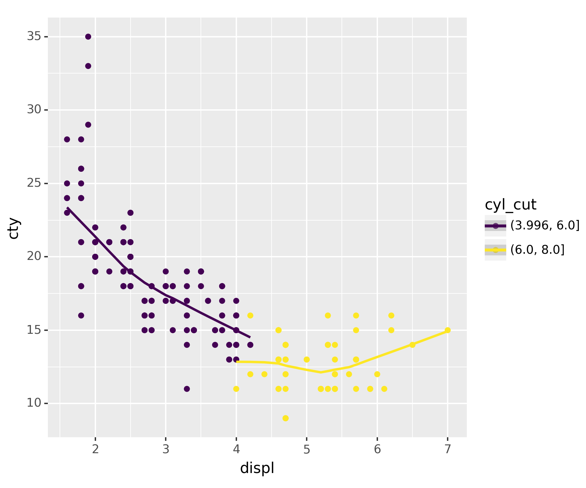

#!pip install plotnine1. 사전작업
숙제 | mpg데이터를 이용하여 아래와 같은 그림을 그려라.
- 라이브러리 설치
import pandas as pd
import numpy as np
from plotnine import *
import plotnine- figure 사이즈 설정
plotnine.options.dpi= 150
plotnine.options.figure_size = (6, 5)- 데이터 가져오기
df = pd.read_csv('https://raw.githubusercontent.com/guebin/DV2022/master/posts/mpg.csv')
df.head()| manufacturer | model | displ | year | cyl | trans | drv | cty | hwy | fl | class | |
|---|---|---|---|---|---|---|---|---|---|---|---|
| 0 | audi | a4 | 1.8 | 1999 | 4 | auto(l5) | f | 18 | 29 | p | compact |
| 1 | audi | a4 | 1.8 | 1999 | 4 | manual(m5) | f | 21 | 29 | p | compact |
| 2 | audi | a4 | 2.0 | 2008 | 4 | manual(m6) | f | 20 | 31 | p | compact |
| 3 | audi | a4 | 2.0 | 2008 | 4 | auto(av) | f | 21 | 30 | p | compact |
| 4 | audi | a4 | 2.8 | 1999 | 6 | auto(l5) | f | 16 | 26 | p | compact |
2. 데이터 전처리
mpg = df.assign(cyl_cut = pd.cut(df.cyl, bins = 2)) ## cyl : 실린더 수에 해당하는 열을 두 층으로 분해한다.
mpg.head()| manufacturer | model | displ | year | cyl | trans | drv | cty | hwy | fl | class | cyl_cut | |
|---|---|---|---|---|---|---|---|---|---|---|---|---|
| 0 | audi | a4 | 1.8 | 1999 | 4 | auto(l5) | f | 18 | 29 | p | compact | (3.996, 6.0] |
| 1 | audi | a4 | 1.8 | 1999 | 4 | manual(m5) | f | 21 | 29 | p | compact | (3.996, 6.0] |
| 2 | audi | a4 | 2.0 | 2008 | 4 | manual(m6) | f | 20 | 31 | p | compact | (3.996, 6.0] |
| 3 | audi | a4 | 2.0 | 2008 | 4 | auto(av) | f | 21 | 30 | p | compact | (3.996, 6.0] |
| 4 | audi | a4 | 2.8 | 1999 | 6 | auto(l5) | f | 16 | 26 | p | compact | (3.996, 6.0] |
필요한 자료는
cyl,displ,cty이다.
- x축에
displ, y축에cty, 그리고cyl을 두 구간으로 나눈cyl_cut을 두 색상으로 구분하여 산출하여야 한다.
3. 그래프 산출
fig = ggplot(mpg)
point = geom_point(aes(x = 'displ', y = 'cty', color = 'cyl_cut'))
smooth = geom_smooth(aes(x = 'displ', y = 'cty', color = 'cyl_cut'))따라서 아래와 같은 결과를 산출시킨다.
fig + point + smooth/usr/local/lib/python3.10/dist-packages/plotnine/stats/smoothers.py:330: PlotnineWarning: Confidence intervals are not yet implemented for lowess smoothings.
/usr/local/lib/python3.10/dist-packages/plotnine/stats/smoothers.py:330: PlotnineWarning: Confidence intervals are not yet implemented for lowess smoothings.
<Figure Size: (900 x 750)>